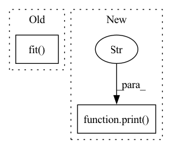

Pattern ID :41420

Before Change
while not converged:
i += 1
// coef = Lasso(alpha=current, selection="cyclic", max_iter=10000).fit(X, y).coef_
coef = ElasticNet(alpha=alpha, l1_ratio=l1_ratio, fit_intercept=False).fit(np.sqrt(current + 1) * X,
y / np.sqrt(current + 1)).coef_
current_val = 1 - np.linalg.norm(X @ coef)
current, previous, min_, max_ = bin_search(current, previous, current_val, previous_val, min_, max_)
previous_val = current_val
After Change
converged = True
elif np.abs(max_ - min_) < 1e-30 or i == 50:
converged = True
print("warning: failed to converge")
return coef, current
def lyuponov(self):
views = len(self.datasets)
In pattern: SUPERPATTERN
Frequency: 3
Non-data size: 2
Instances
Fragment ID: 116523632
Project Name: jameschapman19/cca_zoo
Commit Name: dd480e267376da9626d2fb1ae97dc1301f06443f
Time: 2020-11-03
Author: james.chapman.19@ucl.ac.uk
File Name: cca_zoo/alternating_least_squares.py
M Class Name: ALS_inner_loop
N Class Name: ALS_inner_loop
M Method Name: constrained_elastic(6)
N Method Name: constrained_elastic(6)
M Parent Class:
N Parent Class:
M File Name: cca_zoo/alternating_least_squares.py
N File Name: cca_zoo/alternating_least_squares.py
M Start Line: 364
M End Line: 387
N Start Line: 336
N End Line: 355
'>
Before Change
save_freq="epoch",
)
model.fit(train_datagen, epochs=epochs, validation_data=test_datagen, callbacks=[sv], verbose=1)
logging.info("Model trained succesfully")
def predict(self, text, sentimemt):
After Change
if valid_loss < best_loss:
torch.save(model.state_dict(), "model.pt")
print(f"Epoch:{epoch} train loss -- > {train_loss : .3f} valid loss --> {valid_loss : .3f}")
logging.info("Model trained succesfully")
def predict(self, text, sentimemt):
'>
Fragment ID: 116523633
Project Name: shahules786/twitter-emotions
Commit Name: ad9e74dd9a5a025e017efa75af189faf1c9985c0
Time: 2021-04-05
Author: shahules@Shahuls-MacBook-Air.local
File Name: twitteremotions/emotions.py
M Class Name: TwitterEmotions
N Class Name: TwitterEmotions
M Method Name: train(6)
N Method Name: train(6)
M Parent Class:
N Parent Class:
M File Name: twitteremotions/emotions.py
N File Name: twitteremotions/emotions.py
M Start Line: 34
M End Line: 49
N Start Line: 34
N End Line: 56
'>
Before Change
callbacks=[checkpoint_callback, early_stop_callback],
max_epochs=cfg.model.epochs,
)
trainer.fit(model, train_loader, test_loader)
trainer.test(model, test_loader)
if __name__ == "__main__":
After Change
)
scheduler = instantiate(cfg.model.scheduler, optimizer)
print(f"Net: {type(net)}")
print(f"Loss: {type(loss_fn)}")
print(f"Optimizer: {type(optimizer)}")
print(f"Scheduler: {type(scheduler)}")
'>
Fragment ID: 116523626
Project Name: dmizr/phuber
Commit Name: ad245024bf1f5c0a01e4bd49300c6d7846674961
Time: 2020-11-24
Author: david.mizrahi@epfl.ch
File Name: phuber/trainer.py
M Class Name: AnonimousClass
N Class Name: AnonimousClass
M Method Name: train(1)
N Method Name: train(1)
M Parent Class:
N Parent Class:
M File Name: phuber/trainer.py
N File Name: phuber/trainer.py
M Start Line: 22
M End Line: 84
N Start Line: 29
N End Line: 33